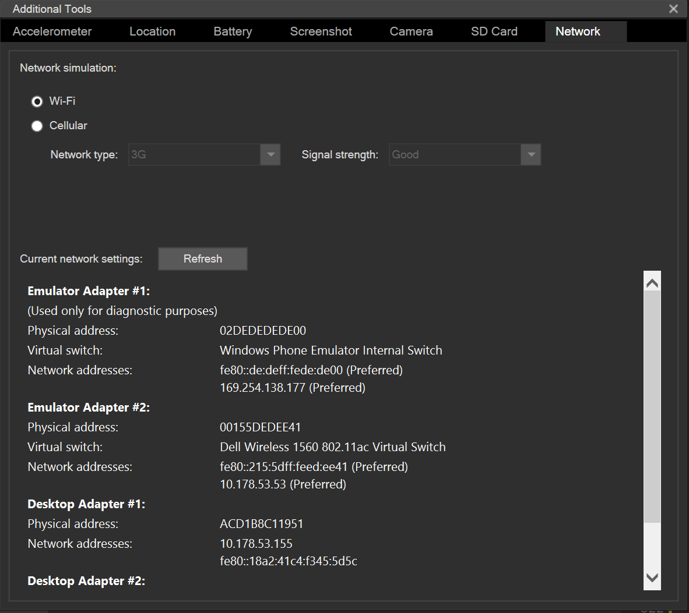

Handling Data in Mobile Clients¶
Pretty much any non-trivial mobile client will require access to data. Although we have already brushed on handling data within the client, this section will go deeper into the data handling aspects on the client. We will cover how to get and process data, how to deal with performance and reliability and some of the quirks that one must deal with when dealing with offline data.
An Online Client¶
We've already seen an example of an online client in our online TaskList project. There is a method for obtaining a reference to an online table:
var table = client.GetTable<Model>();
This method relies on the fact that the table name is the same as the model. One must have a consistent naming scheme - the model on the server, table controller on the server, model on the client and table on the client must all be based on the same root name. This is definitely a best practice. You can produce an un-typed table:
var table = client.GetTable("todoitem");
This version of the method returns an untyped table. Whereas a typed table is based on a concrete model, an untyped table is based on a JSON object. This allows one to access data when the model is unknown or hard to represent in a model. You should never use an untyped table unless there is no other way of achieving whatever operation you need.
All tables implement the IMobileServiceTable interface:
- ReadAsync() performs reads against the table.
- LookupAsync() reads a single record in the table, identified by its id.
- InsertAsync() inserts a new record into the table.
- UpdateAsync() updates an existing record in the table.
- DeleteAsync() deletes a record in the table.
- UndeleteAsync() un-deletes a deleted record (if soft-delete is turned on).
When developing my interface, I tend to wrap my table interface into another class. This isn't because I like wrapping classes. Rather it is
because the return values from many of the methods are not compatible with the general patterns used when working with a UI. For instance, the
ReadAsync() method returns an IEnumerable<> type. However, the standard list management in Xamarin and UWP applications use an
ObservableCollection<> instead. One has to do a conversion from one to the other.
Let's look at a standard table wrapper:
using System.Collections.Generic;
using System.Threading.Tasks;
using Microsoft.WindowsAzure.MobileServices;
using TaskList.Abstractions;
namespace TaskList.Services
{
public class AzureCloudTable<T> : ICloudTable<T> where T : TableData
{
IMobileServiceTable<T> table;
public AzureCloudTable(MobileServiceClient client)
{
this.table = client.GetTable<T>();
}
#region ICloudTable interface
public async Task<T> CreateItemAsync(T item)
{
await table.InsertAsync(item);
return item;
}
public async Task<T> UpsertItemAsync(T item)
{
return (item.Id == null) ?
await CreateItemAsync(item) :
await UpdateItemAsync(item);
}
public async Task DeleteItemAsync(T item)
=> await table.DeleteAsync(item);
public async Task<ICollection<T>> ReadAllItemsAsync()
=> await table.ToListAsync();
public async Task<T> ReadItemAsync(string id)
=> await table.LookupAsync(id);
public async Task<T> UpdateItemAsync(T item)
{
await table.UpdateAsync(item);
return item;
}
#endregion
}
}
This is the AzureCloudTable class that our task list has been using thus far. It's actually got a few bugs in it. Let's go
over them.
Probably the most egregious bug is that the ReadAllItemsAsync() method does not handle paging. If you have more than 50 items,
then the ToListAsync() method will do a single GET operation and then return the results. The Azure Mobile Apps Server SDK implements
enforced paging. This protects two things. Firstly, the client cannot tie up the UI thread and cause a significant delay in the
responsiveness of the app. More importantly, a rogue client cannot tie up the server for a long period thus helping with dealing
with denial of service attacks. Paging is a good thing.
To test this:
- Insert over 50 records into the
TodoItemstable in your database using a SQL client. - Put a break point at the
Items.ReplaceRange(list);(line 78 approximately) inViewModels\TaskListViewModel.cs. - Run the UWP project.

Note that even though there are more than 50 records, you will only see 50 records in the list. There are multiple ways to fix
this and it depends on your final expectation. In the class of "probably not what we want", we can keep on reading records until
there are no more records to read. This is the simplest to implement. In the Services\AzureCloudTable.cs file, replace the
ReadAllItemsAsync() method with the following:
public async Task<ICollection<T>> ReadAllItemsAsync()
{
List<T> allItems = new List<T>();
var pageSize = 50;
var hasMore = true;
while (hasMore)
{
var pageOfItems = await table.Skip(allItems.Count).Take(pageSize).ToListAsync();
if (pageOfItems.Count > 0)
{
allItems.AddRange(pageOfItems);
}
else
{
hasMore = false;
}
}
return allItems;
}
This code will always make a minimum of 2 requests if there is any data. If you have 75 records, three requests will be made - the first will bring down 50 records, the second 25 records and the third no reocrds. Why not stop at the second request? We expect this code to run on a live system. The OData subsystem is allowed to return less than the requested value and it will do so for a variety of reasons. For example, it may be configured with a maximum transfer size and the records won't fit into the transfer buffer. The only way of knowing for sure that you have received all the records is to do a request and be told there is no more.
This code could be simplified quite a bit. The reason I am not doing so is that this is not how you would want to do the transfer
of items in a real application. Doing this will tie up the UI thread of your application for quite a while as the AzureCloudTable
downloads all the data. Consider if there were thousands of entries? This method would be problematic very quickly.
The alternative is to incrementally load the data as it is needed. This means that your UI thread will pause as the data is loaded,
but the resulting UI will be less memory hungry and overall more responsive. We start by adjusting our Abstractions\ICloudTable.cs
to add a method signature for returning paged data:
public interface ICloudTable<T> where T : TableData
{
Task<T> CreateItemAsync(T item);
Task<T> ReadItemAsync(string id);
Task<T> UpdateItemAsync(T item);
Task<T> UpsertItemAsync(T item);
Task DeleteItemAsync(T item);
Task<ICollection<T>> ReadAllItemsAsync();
Task<ICollection<T>> ReadItemsAsync(int start, int count);
}
The ReadItemsAsync() method is our new method here. The concrete implementation usese .Skip() and .Take() to return just the
data that is required:
public async Task<ICollection<T>> ReadItemsAsync(int start, int count)
{
return await table.Skip(start).Take(count).ToListAsync();
}
Now that we have a method for paging through the contents of our table, we need to be able to wire that up to our ListView. Xamarin Forms
has a concept called Behaviors that lets us add functionality to user interface controls without having to completely re-write them or
sub-class them. We can use a behavior to implement a reusable paging control for a ListView. Xamarin provides a sample for this called
EventToCommandBehavior (along with an explanation). We are going to be using the ItemAppearing event and that event uses the
ItemVisibilityEventArgs as a parameter. We need a converter for the EventToCommandBehavior class (in Converters\ItemVisibilityConverter.cs):
using System;
using System.Globalization;
using Xamarin.Forms;
namespace TaskList.Converters
{
public class ItemVisibilityConverter : IValueConverter
{
public object Convert(object value, Type targetType, object parameter, CultureInfo culture)
{
var eventArgs = value as ItemVisibilityEventArgs;
return eventArgs.Item;
}
public object ConvertBack(object value, Type targetType, object parameter, CultureInfo culture)
{
throw new NotImplementedException();
}
}
}
This is wired up with some XAML code in Pages\TaskList.xaml.cs. There are two pieces. Firstly, we must define the ItemVisibilityConverter
that we just wrote. This is done at the top of the file:
<?xml version="1.0" encoding="utf-8" ?>
<ContentPage x:Class="TaskList.Pages.TaskList"
xmlns="http://xamarin.com/schemas/2014/forms"
xmlns:x="http://schemas.microsoft.com/winfx/2009/xaml"
xmlns:behaviors="clr-namespace:TaskList.Behaviors;assembly=TaskList"
xmlns:converters="clr-namespace:TaskList.Converters;assembly=TaskList"
Title="{Binding Title}">
<ContentPage.Resources>
<ResourceDictionary>
<converters:ItemVisibilityConverter x:Key="ItemVisibilityConverter" />
</ResourceDictionary>
</ContentPage.Resources>
Next, we must define the behavior for the ListView:
<ListView CachingStrategy="RecycleElement"
IsPullToRefreshEnabled="True"
IsRefreshing="{Binding IsBusy,
Mode=OneWay}"
ItemsSource="{Binding Items}"
RefreshCommand="{Binding RefreshCommand}"
RowHeight="50"
SelectedItem="{Binding SelectedItem,
Mode=TwoWay}">
<ListView.Behaviors>
<behaviors:EventToCommandBehavior Command="{Binding LoadMoreCommand}"
Converter="{StaticResource ItemVisibilityConverter"
EventName="ItemAppearing" />
</ListView.Behaviors>
Finally, we need to add a new command to our TaskListViewModel to load more items. This involves
firstly defining the new command:
public TaskListViewModel()
{
CloudTable = CloudService.GetTable<TodoItem>();
Title = "Task List";
RefreshCommand = new Command(async () => await Refresh());
AddNewItemCommand = new Command(async () => await AddNewItem());
LogoutCommand = new Command(async () => await Logout());
LoadMoreCommand = new Command<TodoItem> (async (TodoItem item) => await LoadMore(item));
// Subscribe to events from the Task Detail Page
MessagingCenter.Subscribe<TaskDetailViewModel>(this, "ItemsChanged", async (sender) =>
{
await Refresh();
});
// Execute the refresh command
RefreshCommand.Execute(null);
}
public ICommand LoadMoreCommand { get; }
We also need to define the actual command code:
bool hasMoreItems = true;
async Task LoadMore(TodoItem item)
{
if (IsBusy)
{
Debug.WriteLine($"LoadMore: bailing because IsBusy = true");
return;
}
// If we are not displaying the last one in the list, then return.
if (!Items.Last().Id.Equals(item.Id))
{
Debug.WriteLine($"LoadMore: bailing because this id is not the last id in the list");
return;
}
// If we don't have more items, return
if (!hasMoreItems)
{
Debug.WriteLine($"LoadMore: bailing because we don't have any more items");
return;
}
IsBusy = true;
try
{
var list = await CloudTable.ReadItemsAsync(Items.Count, 20);
if (list.Count > 0)
{
Debug.WriteLine($"LoadMore: got {list.Count} more items");
Items.AddRange(list);
}
else
{
Debug.WriteLine($"LoadMore: no more items: setting hasMoreItems= false");
hasMoreItems = false;
}
}
catch (Exception ex)
{
await Application.Current.MainPage.DisplayAlert("LoadMore Failed", ex.Message, "OK");
}
finally
{
IsBusy = false;
}
}
I've added a whole bunch of debug output because this command is called a lot, so I can scroll back through the output window instead of setting a breakpoint and clicking Continue a lot.
As the UI displays each cell, it calls our command. The command figures out if the record being displayed is the
last one in the list. If it is, it asks for more records. Once no more records are available, it sets the
flag hasMoreItems to false so it can short-circuit the network request.
Tip
Be careful when using OrderBy() with online data. Earlier pages may change, causing duplicated data or
missed data in your result set. There is little you can do about this other than pulling down all the data
ordered by the CreatedAt field (which is the default).
Finally, our current implementation of the Refresh() method loads all the items. We need to adjust it
to only load the first page:
async Task Refresh()
{
if (IsBusy)
return;
IsBusy = true;
try
{
var identity = await CloudService.GetIdentityAsync();
if (identity != null)
{
var name = identity.UserClaims.FirstOrDefault(c => c.Type.Equals("name")).Value;
Title = $"Tasks for {name}";
}
var list = await CloudTable.ReadItemsAsync(0, 20);
Items.ReplaceRange(list);
hasMoreItems = true;
}
catch (Exception ex)
{
await Application.Current.MainPage.DisplayAlert("Items Not Loaded", ex.Message, "OK");
}
finally
{
IsBusy = false;
}
}
We've done two things here.
- We have altered the first request so that only the first 20 records are retrieved.
- We have set
hasMoreItemsto true so that theLoadMore()command will do network requests again.
Query Support in Online Clients¶
When using an online client, you can also use an OData query to look for records. The following code snippet, for example, will only return records that are incomplete:
return await table
.Where(item => item.Complete == false)
.ToListAsync()
This is a standard LINQ query. Just as the LINQ query was used to adjust the SQL that is generated in the server-side code, the LINQ query here is used to adjust the OData query that is generated to call the server. This particular query will generate the follow HTTP call:
GET /tables/todoitem?$filter=(complete+eq+false) HTTP/1.1
LINQ queries are very useful in dealing with online data. In general they should take a specific forms
table // start with the table reference
.Where(filter) // filter the results
.Select(filter) // Only return certain fields
.Skip(start).Take(count) // paging support
.ToListAsync() // convert to something we can use
This format allows you to be very specific about what you want to return from the server, thus allowing you to balance the optimization of bandwidth with the responsiveness of the UI.
An Offline Client¶
Another method of optimizing bandwidth utilization with an added benefit of providing a resilient data connection is to use an offline sync database. The Azure Mobile Apps Client SDK has a built-in offline mode that allows for the common requirements of bandwidth optimization, connection resliency, and performance optimization.
- An offline capable table uses Incremental Sync to only bring down new records from the server.
- Connection detection allows you to defer requests until after a connection is available.
- In-built Conflict Resolution provides a robust mechanism for handling changes while your client was offline.
- Since the data is always local, the UI will be much more responsive to changes.
All of this comes at a cost. We need to maintain an offline sync database for the tables you wish to provide offline, which takes up memory. It may result in large data transfers (especially in the cases of the first sync operation and rapidly changing tables). Finally, there is more complexity. We have to deal with the offline table maintenance and conflict resolution patterns.
Install SQLite for Universal Windows
Before you get started with this section, install SQLite for Universal Windows from the Extensions and Updates in Visual Studio. Android and iOS do not need a SQLite package (it is integrated into the platform). However, SQLite is not natively provided on the Universal Windows platform.
There are three stages to using an offline client:
- Initialize the local SQLite database before use.
- Set up push / pull logic to maintain the contents of the SQLite database.
- Configure appropriate conflict resolution.
The actual code for your mobile client that deals with tables remains identical to the online case.
To effect the offline sync, the Azure Mobile Apps client SDK keeps a table in the local SQLite database called the Operations Queue. An entry is placed in the operations queue whenever a modification is done to a sync table. These modifications are collapsed. Later modifications to the same record in a sync table will be collapsed into a single update when transmitted to the mobile backend.
Configuring the Local SQLite database¶
We must initialize the local database before we can use it. This happens on start up and the Azure Mobile
Apps SDK knows enough of the models to understand the basics of maintaining the database. Initializing the
database is deceptively simple. Install the Mirosoft.Azure.Mobile.Client.SQLiteStore package to all the
client projects.
SQLitePCL and Android N
The SQLiteStore package relies on another package for implementing a SQLite portable class library called
SQLitePCL. This package is not compatible with Android "N" at this time. An update to the SQLiteStore
is being developed to change the dependent package to one that is compatible.
In the Services\AzureCloudService.cs file, add the following method:
#region Offline Sync Initialization
async Task InitializeAsync()
{
// Short circuit - local database is already initialized
if (Client.SyncContext.IsInitialized)
return;
// Create a reference to the local sqlite store
var store = new MobileServiceSQLiteStore("tasklist.db");
// Define the database schema
store.DefineTable<TodoItem>();
// Actually create the store and update the schema
await Client.SyncContext.InitializeAsync(store);
}
#endregion
We also need to ensure the initialization is carried out before we use the local database. We do that by adjusting
the GetTable<> method:
/// <summary>
/// Returns a link to the specific table.
/// </summary>
/// <typeparam name="T">The model</typeparam>
/// <returns>The table reference</returns>
public async Task<ICloudTable<T>> GetTableAsync<T>() where T : TableData
{
await InitializeAsync();
return new AzureCloudTable<T>(Client);
}
Note that we made the routine async during this process. Adjust the ICloudService interface and the calls to
GetTable<> in the rest of the code to compensate for this.
Updating the Sync tables¶
We also need to add some routines to our ICloudTable<> and AzureCloudTable<> classes to effect a synchronization.
The first method is added to the ICloudTable<> interface and pulls data from the mobile backend:
public interface ICloudTable<T> where T : TableData
{
Task<T> CreateItemAsync(T item);
Task<T> ReadItemAsync(string id);
Task<T> UpdateItemAsync(T item);
Task<T> UpsertItemAsync(T item);
Task DeleteItemAsync(T item);
Task<ICollection<T>> ReadAllItemsAsync();
Task<ICollection<T>> ReadItemsAsync(int start, int count);
Task PullAsync();
}
The new method is PullAsync() which will do the "pull data from the server" operation. The AzureCloudTable<>
class has the concrete implementation:
IMobileServiceSyncTable<T> table;
public AzureCloudTable(MobileServiceClient client)
{
table = client.GetSyncTable<T>();
}
public async Task PullAsync()
{
string queryName = $"incsync_{typeof(T).Name}";
await table.PullAsync(queryName, table.CreateQuery());
}
Note that we have changed the call to get the table reference. It's now a SyncTable. You can test to see if the
sync table has been defined with the following:
if (client.IsSyncTable(typeof(T).Name)) {
// There is a sync table defined
}
This can be used to have a single AzureCloudTable implementation for both the online and offline capabilities. The
concrete implementation of the PullAsync() method implements incremental sync. If we set the queryName to null,
then the entire table is pulled across each time. By setting a queryName, the last updated time for the table is stored
and associated with the queryName. The last updated time is used to request only records that have changed since the
last updated time when doing the pull from the backend.
The push of the operations queue up to the mobile backend is handled by a single call in the AzureCloudService class:
public async Task SyncOfflineCacheAsync()
{
await InitializeAsync();
// Push the Operations Queue to the mobile backend
await Client.SyncContext.PushAsync();
// Pull each sync table
var taskTable = await GetTableAsync<TodoItem>(); await taskTable.PullAsync();
}
note that if the mobile client tries to pull data while there are pending operations in the operations quuee, the Azure Mobile Apps client SDK will perform an implicit push. You can check the state of the operations queue with:
if (Client.SyncContext.PendingOperations > 0) {
// There are pending operations
}
The only thing left to do now is to decide when to synchronize the local database on the mobile device. In this example,
I am going to synchronize the database during the refresh command of the `TaskListViewModel` and on saving or deleting
an item in the `TaskDetailViewModel`. Each synchronization will be called with the following:
```csharp
await CloudService.SyncOfflineCacheAsync();
Info
The offline sync cache automatically handles paging of results during the transfer for you so you never have to worry
about it. By default, it orders the transfers by the CreatedAt field, which is theoretically linear.
Additional Steps on Universal Windows¶
If you are compiling the Universal Windows (UWP) project, there is an extra step. You must Add a reference for SQLite to the project. Open the TaskList.UWP project, then right-click on the References node and select Add Reference. Select Universal Windows -> Extensions and place a check mark next to the SQLite for Universal Windows and Visual C++ 2015 Runtime for Universal Windows components.

If you don't do this, you will get the rather cryptic error message "Unable to set temporary directory" when running the application.
Detecting Connection State¶
Xamarin has a rather cool plugin called the Connectivity Plugin for testing connectivity state. We can install it by
installing the Xam.Plugin.Connectivity NuGet package. Once that is installed, we can update our SyncOfflineCacheAsync()
method to use it:
public async Task SyncOfflineCacheAsync()
{
await InitializeAsync();
if (!(await CrossConnectivity.Current.IsRemoteReachable(Client.MobileAppUri.Host, 443)))
{
Debug.WriteLine($"Cannot connect to {Client.MobileAppUri} right now - offline");
return;
}
// Push the Operations Queue to the mobile backend
await Client.SyncContext.PushAsync();
// Pull each sync table
var taskTable = await GetTableAsync<TodoItem>(); await taskTable.PullAsync();
}
The Connectivity Plugin (which is accessible through CrossConnectivity.Current) has other parameters that allow the mobile
client to test for specific types of connectivity. For example, let's say you only wanted to pull one of the tables over
wifi. You could do this as follows:
var connections = CrossConnectivity.Current.ConnectionTypes;
if (connections.Contains(ConnectionType.Wifi)) {
var largeTable = await GetTableAsync<LargeModel>();
largeTable.PullAsync();
}
The Connectivity plugin when paired with the Azure Mobile Apps Client SDK gives you a lot of flexibility in deciding what to sync and over what type of connection you should sync.
Handling Conflict Resolution¶
When the mobile client submits a modification to the mobile backend, it's generally done as a two-step process:
- A "pre-condition check" is done, comparing the Version to the ETag of the record (which is derived from the Version of the record).
- The actual request is done, where the Version of the mobile client is compared to the Version of the record on the mobile backend.
If the version of the record being submitted is different from the version on the server, the test will fail. In the case of the first check, a 412 Precondition Failed will be returned for the modification. If the second test fails, a 409 Conflict response is returned. Normally, you will see the 412 Precondition Failed response, but you should be prepared for either response.
Both responses indicate a conflict that needs to be resolved before continuing. Programatically, when doing a modification in
an online table (such as an Insert, Update, Delete), you should be capture the MobileServicePreconditionFailedException<> Exception
to handle the conflict. In an offline sync table, you should capture the MobileServicePushFailedException during the
PushAsync() operation. This will potentially have an array of conflicts for you to deal with.
For the online case, the code would look like this:
try
{
await CloudService.InsertAsync(item);
}
catch (MobileServicePreconditionFailedException<TodoItem> ex)
{
await ResolveConflictAsync(item, ex.Item);
}
For the offline case, the code would look like this:
try
{
await CloudService.PushAsync();
}
catch (MobileServicePushFailedException ex)
{
if (ex.PushResult != null)
{
foreach (var error in ex.PushResult.Errors)
{
await ResolveConflictAsync(error);
}
}
}
In both cases, the ResolveConflictAsync() method is called for each conflict in turn. Resolving the conflict involves
deciding between the two options or making corrections to the item.
- If you wish to keep the client copy, set the client Version property to the server Version value and re-submit.
- If you wish to keep the server copy, discard the update.
- If you wish to do something else, create a new copy of the record, set the Version to be the same as the server Version, then re-submit.
Info
If the model on your mobile client does not have a Version field, the policy is "last write wins".
The online case is relatively simple as you are going to be ignoring the old request and creating a new request. Here is some template code that implements both client-wins and server-wins strategies for the offline case:
sync Task ResolveConflictAsync(MobileServiceTableOperationError error)
{
var serverItem = error.Result.ToObject<T>();
var localItem = error.Item.ToObject<T>();
// Note that you need to implement the public override Equals(TodoItem item)
// method in the Model for this to work
if (serverItem.Equals(localItem))
{
// Items are the same, so ignore the conflict
await error.CancelAndDiscardItemAsync();
return;
}
// Client Always Wins
localItem.Version = serverItem.Version;
await error.UpdateOperationAsync(JObject.FromObject(localItem));
// Server Always Wins
// await error.CancelAndDiscardItemAsync();
}
You could also ask the user as an option. Finally, you could do some processing. For example, let's say that you wanted to keep the local version of the Text, but keep the server version of Complete:
localItem.Complete = serverItem.Complete;
localItem.Version = serverItem.Version;
await error.UpdateOperationAsync(JObject.FromObject(serverItem));
There are many ways to resolve a conflict. You should consider your requirements carefully. Asking the user should always be the last resort for conflict resolution. In the majority of applications, most users will click the "keep my version" button to resolve conflicts, so the UI for resolving conflicts should do more than just ask the user to decide between a server and a client version.
Query Management¶
Record selection is based on two factors:
- Security policy is enforced at the server.
- User preference is enabled at the client.
We've already discussed security policy in depth in the last section. We've also discussed user queries for online usage. We just use LINQ to affect a change in the query sent to the server. However, what about offline cases? There are situations where you want to keep a smaller subset of the data that you are allowed to see for offline usage. A common request, for example, is to have the last X days of records available offline.
In our PullAsync() call for the table, we use table.CreateQuery() to create a query that is designed to get
all the records available to the user from the server. This is not always appropriate and can be adjusted. Let's
adjust it to only obtain the records for our TodoItem table where either of the following conditions apply:
- The record has been updated within the last day.
- The task is incomplete.
Once the task is marked completed, it will remain in the cache for 1 day, then be removed automatically. You can
still obtain the task while online. The table.CreateQuery() method produces an IMobileServiceTableQuery<>
object. This can be dealt with via LINQ:
var queryName = $"incsync:r:{typeof(T).Name}";
var query = table.CreateQuery()
.Where(r => !r.Complete || r.UpdatedAt < DateTimeOffset.Now.AddDays(-1));
await table.PullAsync(queryName, query);
Note that I am using a different query name in this case. The maximum value of UpdatedAt for the records is stored and associated with the query name. If the same query name is used, then only the records updated since the stored date will be retrieved. If you change the query, then change the query name.
Another common request is to restrict the properties that are in the local cache. For instance, maybe you have a particularly large text blob that you want to make available online, but not offline:
var queryName = $"incsync:s:{typeof(T).Name}";
var query = table.CreateQuery()
.Select(r => new { r.Text, r.Complete, r.UpdatedAt, r.Version });
await table.PullAsync(queryName, query);
You can also use the Fluent syntax:
var query =
from r in table.CreateQuery()
select new { r.Text, r.Complete, r.UpdatedAt, r.Version };
You should always construct the object including the UpdatedAt and Version properties. UpdatedAt is used
for incremental sync and Version is used for conflict resolution.
Both of these cases use standard LINQ syntax to adjust the query being sent to the mobile backend in exactly the same way that we adjusted the query when we were doing online searches. An offline "pull" is exactly the same as an online "query".
Tip
There are times when you want to download two different queries. Avoid this if at all possible as it will cause additional requests to the backend that are un-necessary. Construct your query such that all records that you want to download to the offline cache are requested at once.
Dealing with Historical Data¶
Let's continue our example with a small extension. Let's say you want to have the last 7 days worth of records available offline, but you still want the ability to do a historical search. In this case, you can create two table references to the same table - one online for historical searches and one offline for the normal use case:
var table = client.GetSyncTable<Message>();
var historicalTable = client.GetTable<Message>();
In this case, the table reference is used to access the offline data. However, you could implement a search
capability that does a query against the historicalTable instead. They both point to the same table. In one
case, the server is referenced (and only available online) and in the other, the local cache is referenced
(and available offline).
Purging the Local Cache¶
It will be inevitable that you will want to clear the local cache at some point.
- You have just changed the model and underlying data and need to re-establish a baseline.
- You only cache newer data and want to remove historical data.
- Things got corrupt for some reason and you need to refresh everything.
Whatever the reason, clearing the cache is one of those infrequent things that is going to be a necessity. There are three forms of this operation:
Deleting the backing store¶
The major requirement during development is that you want to delete the SQLite file that backs the offline cache. It's likely that the model evolves over time during development. Add test data that can sometimes cause things to go wrong and you have a recipe for bugs that are only there because you are developing. If you suspect bad data in the offline cache, the first thing you want to do is start afresh.
Each platform stores the offline cache in a different place and the mechanism for removing it is different in each case. For Universal Windows projects, the offline cache is stored in the Local AppData folder for the application. This is a dedicated area that each Universal Windows app has access to for anything from temporary files to settings and cache files. To find the location of the file, open the TaskList.UWP project and open the Package.appxmanifest file. Go to the Packaging tab.

Note the long Package family name field. Your backing file is in your home directory under AppData\Local\Packages\_family\_name_\LocalState.
You specified the name of the file when you created the store.
You need to find the Package Name for Android. Right-click on the TaskList.Droid project and select Properties, then select the Android Manifest tab.

The database will be located in /data/data/_package\_name_/files directory on the emulator. Google has provided utilities
for handling developer connections to devices (including emulators). In this case, we can use the adb utility. First, start
your emulator of choice through the Tools -> Visual Studio Emulator for Android menu option. Click on the Play
button next to the emulator that you have been using. Ensure the emulator is fully started before continuing. The adb utility
can be accessed through a shell prompt (I use PowerShell normally) and it is located in $ANDROID_SDK/platform-tools. On Windows,
this is probably C:\Program Files (x86)\Android\android-sdk\platform-tools. It's a good idea to add this to your PATH.
Start at your Visual Studio Emulator for Android. Click on the Tools button (it looks like a pair of right-facing chevrons) and select the Network tab.

You want the network address of the Windows Phone Emulator Internal Switch. In this case, it's 169.254.138.177. The 169.254 address range is a private switch between the host computer (the one you are developing on) and the emulators. Open up a shell prompt and type:
adb connect 169.254.138.177:5555
adb shell
Tip
If you are only running one emulator and have no connected real devices, you don't need the adb connect command. Visual
Studio will have already set up the connection for you. Use adb devices to determine if you need to connect.
This opens up a Linux-like shell onto the Android device. You can use normal Linux commands to move around. You can remove the entire private data area for your package using the following:
**root@donatello:/#** cd /data/data/_package\_name_
**root@donatollo:/#** find . -name tasklist.db -print | xargs rm
The database will normally be in the files directory. Use exit to close the shell prompt on the Android device. Each disk
image file is independent. You must remove the database file on each emulator individually.
Tip
You can use the same adb commands to connect to a real Android device connected via USB. Ensure USB Debugging is
enabled on the device. Use adb devices to find the device. For more information, see the Android documentation.
The iOS Simulator does not use an image files. Instead, it stores files on your Mac disk in ~/Library/Developer/CoreSimulator/Devices.
There is a file called device_set.plist that contains the list of devices that are defined and their location. It is most easy to find
a specific device. For example, if you are testing on the iPhone 6x simulator:
$ grep -B 1 'iPhone-6s<' device_set.plist
<string>A3536AA4-0678-43CC-BA21-DD997B89778A</string>
<key>com.apple.CoreSimulator.SimDeviceType.iPhone-6s</key>
--
<string>83D08BC0-2F9A-4479-ABBD-A69858819E93</string>
<key>com.apple.CoreSimulator.SimDeviceType.iPhone-6s</key>
--
<string>ECAE441D-93F8-4D7A-BF14-7FA2D11BC152</string>
<key>com.apple.CoreSimulator.SimDeviceType.iPhone-6s</key>
Each one of these corresponds to a different OS version. You can find the ordering like this:
$ grep SimRuntime.iOS device_set.plist
<key>com.apple.CoreSimulator.SimRuntime.iOS-9-1</key>
<key>com.apple.CoreSimulator.SimRuntime.iOS-9-2</key>
<key>com.apple.CoreSimulator.SimRuntime.iOS-9-3</key>
My simulator is an iPhone 6s running iOS 9.3, so I can see the GUID is the third one: ECAE441D-93F8-4D7A-BF14-7FA2D11BC152. This
GUID is a directory in the same directory as the device_set.plist file. You can use normal UNIX style commands to
remove the backing store:
$ cd ECAE441D-93F8-4D7A-BF14-7FA2D11BC152
$ find . -name 'tasklist.db' -print | xargs rm
You can also use the normal Finder utilities to search for and remove the database file for your app.
Purging Records from the Offline Cache¶
The IMobileServiceSyncTable interface also includes a capability for purging records that are stored in the offline sync by query. This
is done in code like this:
var lowerBound = DateTimeOffset.Now.AddDays(-7);
var query = syncTable.CreateQuery().Where(item => item.UpdatedAt < lowerBound);
var force = true;
await syncTable.PurgeAsync("incsync_Tag", query, force);
There are four parameters for the PurgeAsync call:
- A query name.
- An OData query.
- A boolean for forcing the operation.
- A cancellation token (for the async operation).
Each incremental sync query has a unique name that is specified during the PullAsync() method call. If you use the same name during the
PurgeAsync() call, then the date associated with the incremental sync query is reset, causing a full refresh of the data. This allows
you to do a "purge and refresh" operation. If you don't want this to happen, set the query name to null.
The OData query is a similar query format to the incremental sync query that we used with PullAsync(). In this case, it selects the
records that should be purged from the offline sync cache. If we wished to purge everything, we could just use syncTable.CreateQuery().
If we want to purge only certain records, then we can adjust the query with a .Where() LINQ query. In the example above, records that
have not been updated within the last 7 days are purged.
Finally, the PurgeAsync() call will fail (and generate an exception) if there are any operations pending in the operations queue. If we
specify force = true, then the operations queue check is bypassed and pending operations in the operations queue are flushed without being
uploaded. It is important that this option is used only when absolutely required. You can leave your database in an inconsistent
state if you expect referential integrity between different tables. Use SyncContext.PushAsync() to push the operations queue
to the remote server before calling PurgeAsync(). If you use force = true, then also specify a query name to reset the incremental
sync state.
Debugging the Offline Cache¶
One of the most difficult parts of the offline cache is that it is opaque - you can't really see what is going on. Fortunately, the
SQLiteStore that is used is relatively straight forward to sub-class so we can add logging to it. The following helper method can
be substituted for a SQLiteStore in any code.
public class MobileServiceSQLiteStoreWithLogging : MobileServiceSQLiteStore
{
private bool logResults;
private bool logParameters;
public MobileServiceSQLiteStoreWithLogging(string fileName, bool logResults = false, bool logParameters = false)
: base(fileName)
{
this.logResults = logResults;
this.logParameters = logParameters;
}
protected override IList<Newtonsoft.Json.Linq.JObject> ExecuteQuery(string tableName, string sql, IDictionary<string, object> parameters)
{
Console.WriteLine (sql);
if(logParameters)
PrintDictionary (parameters);
var result = base.ExecuteQuery(tableName, sql, parameters);
if (logResults && result != null)
{
foreach (var token in result)
Console.WriteLine (token);
}
return result;
}
protected override void ExecuteNonQuery(string sql, IDictionary<string, object> parameters)
{
Console.WriteLine (sql);
if(logParameters)
PrintDictionary (parameters);
base.ExecuteNonQuery(sql, parameters);
}
private void PrintDictionary(IDictionary<string,object> dictionary)
{
if (dictionary == null)
return;
foreach (var pair in dictionary)
Console.WriteLine ("{0}:{1}", pair.Key, pair.Value);
}
}
public class LoggingHandler : DelegatingHandler
{
private bool logRequestResponseBody;
public LoggingHandler(bool logRequestResponseBody = false)
{
this.logRequestResponseBody = logRequestResponseBody;
}
protected override async Task<HttpResponseMessage> SendAsync(HttpRequestMessage request, System.Threading.CancellationToken cancellationToken)
{
Console.WriteLine("Request: {0} {1}", request.Method, request.RequestUri.ToString());
if (logRequestResponseBody && request.Content != null)
{
var requestContent = await request.Content.ReadAsStringAsync ();
Console.WriteLine (requestContent);
}
var response = await base.SendAsync(request, cancellationToken);
Console.WriteLine ("Response: {0}", response.StatusCode);
if (logRequestResponseBody)
{
var responseContent = await response.Content.ReadAsStringAsync ();
Console.WriteLine (responseContent);
}
return response;
}
}
Using this class will print all the SQL commands that are executed against the SQLite store. Ensure you are capturing the console somewhere so that you can see the debug messages as you are running your application.